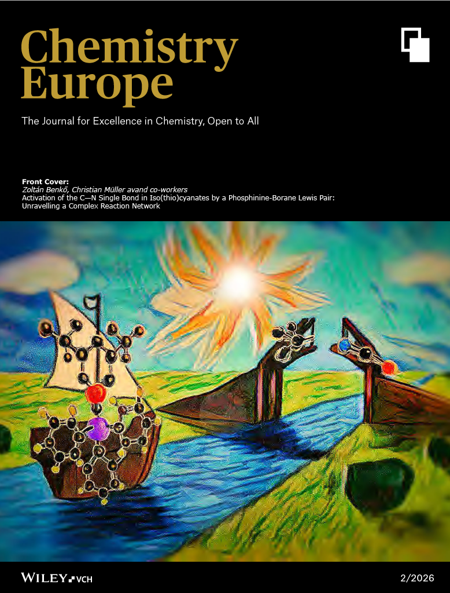
Controlling Multiple Stereogenicity in Diaryl Ethers
ChemistryEurope, 2025, Just Accepted
Designing catalytic strategies for the stereoselective construction of complex heterocycles and atropisomers.
My research focuses on developing innovative catalytic methodologies, leveraging asymmetric organocatalysis, small-ring transformations, and transition-metal catalysis to solve pressing challenges in synthetic organic chemistry.
Born in 1995 in Salakuppam, a village in the Tiruvannamalai district of Tamil Nadu, India, I completed my secondary education at the Tamil Nadu State Government Higher Secondary School in Mekkalur.
I hold a Bachelor of Science in Chemistry from Presidency College (Autonomous), Chennai (2015), and a Master of Science in Chemistry from Bharathidasan University, Tiruchirappalli (2017). I subsequently earned my Ph.D. in Organic Chemistry from the Indian Institute of Technology Madras (IIT Madras), Chennai, in 2024, under the supervision of Professor G. Sekar.
I am currently a Postdoctoral Researcher at Aix-Marseille University, France, working under the mentorship of Professor Damien Bonne.
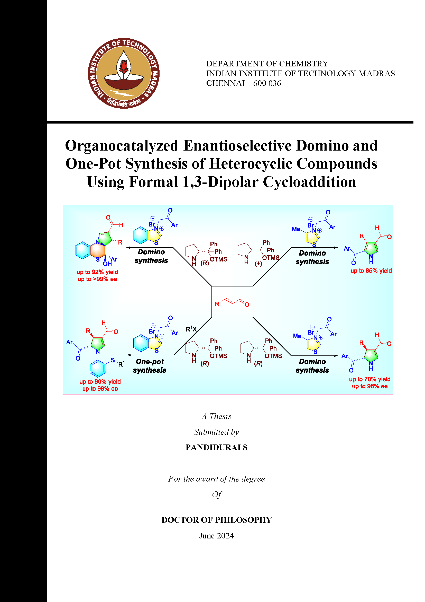
iSm2 Institute of Molecular Sciences of Marseille, Aix-Marseille University, France
Host: Prof. Damien Bonne. Project: Synthesis of heteroatom-linked non-biaryl atropisomeres.
Research Group Page →Indian Institute of Technology Madras (IIT Madras), India
Supervisor: Prof. G. Sekar. Project: Conversion of toluene to benzoic acid using reusable metal nanoparticles.
Indian Institute of Technology Madras (IIT Madras), India
Supervisor: Prof. G. Sekar.
Thesis: Organocatalyzed Enantioselective Domino and One-Pot Synthesis of Heterocyclic Compounds Using Formal 1,3-Dipolar Cycloaddition.
Bharathidasan University, Tiruchirappalli, India
Supervisor: Prof. K. Srinivasan
Thesis: Diastereoselective Synthesis of Alkyne Moiety Appended Donor - Acceptor Cyclopropanes by Michael Initiated Ring Closure.
Presidency College (Autonomous), Chennai, India
The synthesis of complex molecular architectures requires not just chemical intuition, but the design of elegant, highly efficient catalytic systems. My research is driven by the philosophy that synthetic efficiency and structural complexity can be achieved simultaneously through the strategic application of novel catalysis.
By exploring the intersection of organocatalysis, asymmetric induction, and domino reactions, we aim to develop robust methodologies that provide access to biologically relevant heterocycles and axially chiral frameworks with exceptional stereocontrol. Our work ultimately seeks to expand the synthetic toolkit available for drug discovery and materials science.
Hover over any node in the network to view a detailed breakdown of the research theme.
Detailed overview of methodological breakthroughs during my Postdoctoral and Doctoral research.
Currently working at iSm2 (Institute of Molecular Sciences of Marseille, Aix-Marseille University, France) on the synthesis of heteroatom-linked non-biaryl atropisomers via enantioselective desymmetrization strategy using chiral phosphoric acid catalyst.
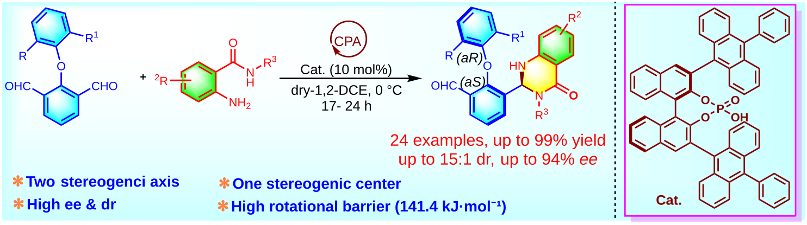
During my Ph.D., my research mainly focused on "Chiral amine organocatalyzed asymmetric 1,3-dipolar cycloaddition for the construction of novel heterocyclic frameworks bearing multiple stereogenic centers".
I successfully developed a methodology for the synthesis of enantioenriched pyrrolo-thiazines-2-carbaldehydes and derivatives, starting from commercially available α,β-unsaturated aldehydes, and easily accessible benzothiazolium salts. The reaction, catalyzed by chiral amino organocatalysts, proceeded via 1,3-dipolar cycloaddition/rearrangement, delivering products in good yields with excellent stereocontrol (up to >99% ee, and >20:1 d.r.).

This methodology was further extended to develop an efficient enantioselective one-pot method for the synthesis of N-phenyl thioether-tethered tetrasubstituted 4,5-dihydropyrrole-3-carbaldehydes. The sequence combined 1,3-dipolar cycloaddition/rearrangement/C-S bond formation/ring-opening (C-S bond cleavage), starting from benzothiazolium salts and α,β-unsaturated aldehydes. Using (R)-diphenylprolinol trimethyl silyl ether as the catalyst, the reaction proceeded in good yields with excellent stereocontrol (>96% ee and up to >20:1 d.r.).
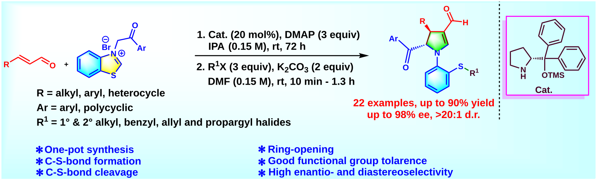
I developed a catalytic domino approach for the synthesis of trisubstituted 1H-pyrroles via 1,3-dipolar cycloaddition/ring-opening/C-S and C-N bond cleavage reaction sequence, starting from readily available α,β-unsaturated aldehydes and 4-metylthiazolium salts. The transformation, catalyzed by racemic diphenylprolinol trimethyl silyl ether at room temperature, afforded the desired products efficiently.
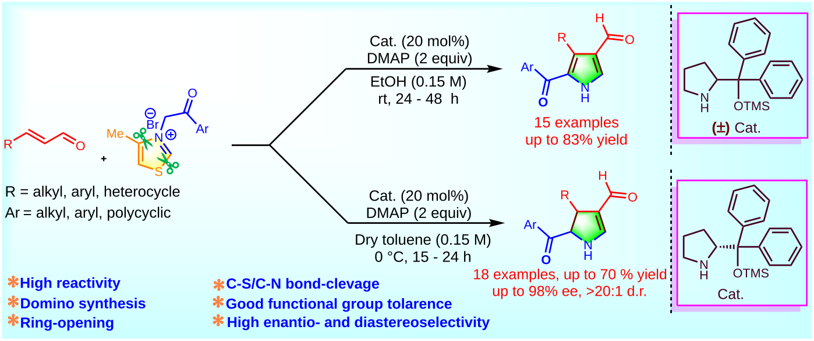
This methodology was further extended to a catalytic asymmetric domino approach for the enantioselective synthesis of trisubstituted 4,5-dihydro-1H-pyrroles. The sequence involved 1,3-dipolar cycloaddition/ring-opening/C-S and C-N bond cleavage using (R)-diphenylprolinol trimethyl silyl ether as the chiral catalyst at 0 °C, affording the products in good yields and with excellent stereocontrol.
Apart from my doctoral research on enantioselective organocatalysis, I have also worked on homogeneous and heterogeneous transition metal (Pd, Pt, Cu), as well as metal nanoparticles (Pd, Pt, Cu) mediated reactions. This provided me with in-depth expertise in both organometallic chemistry and transition metal chemistry. In particular, I demonstrated the one-pot synthesis of 3-arylidene-2-oxindoles via a Heck-like carbocyclization/nucleophilic addition sequence, starting from N-(2-iodophenyl)-N-methyl-3-phenylpropiolamide, phenylacetylene, and a secondary amine, using binaphthyl-stabilized palladium nanoparticles (Pd-BNP) as a reusable catalyst.
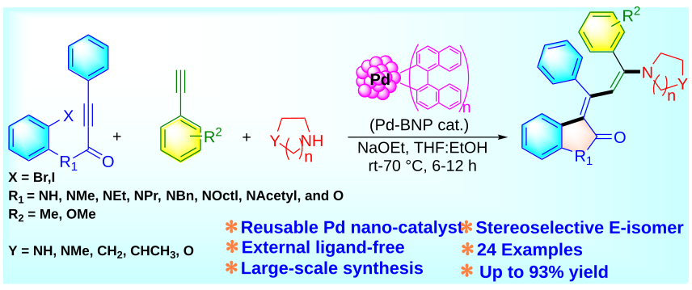

Highlights from peer-reviewed journals.

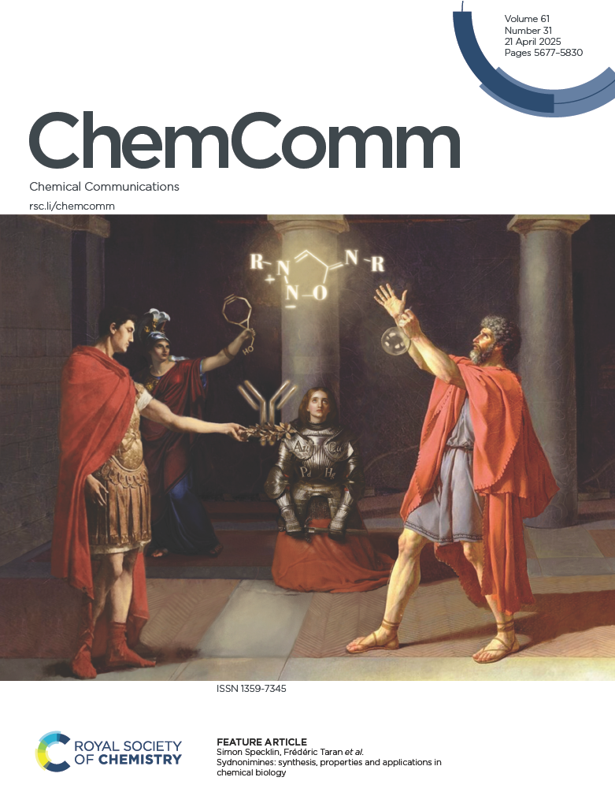

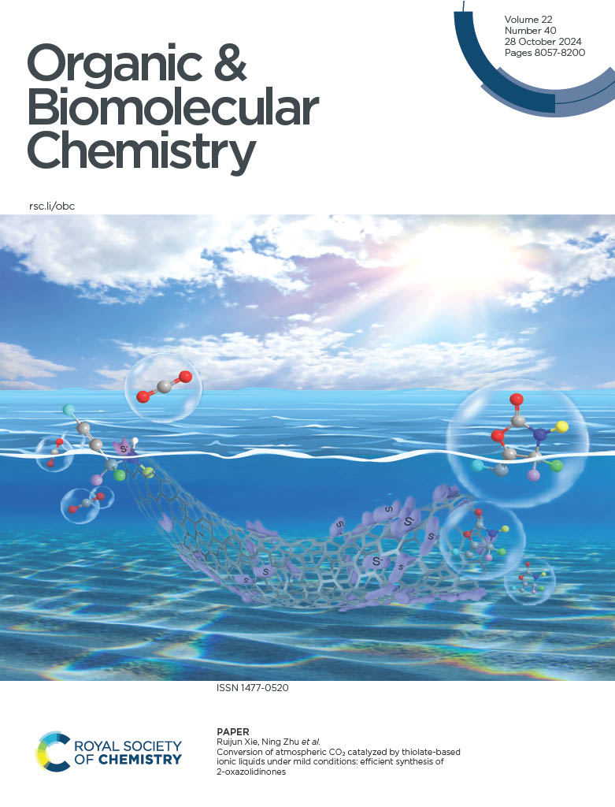

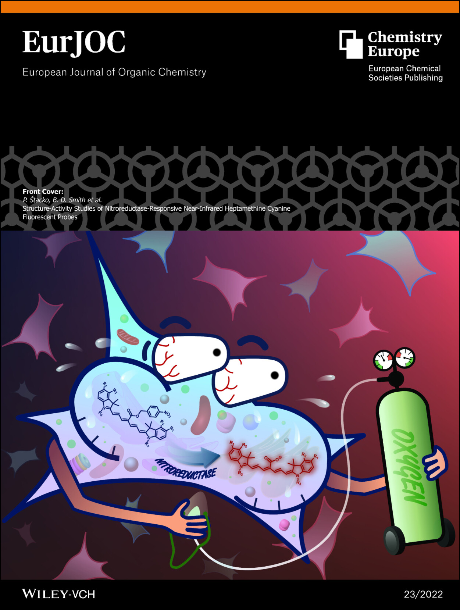
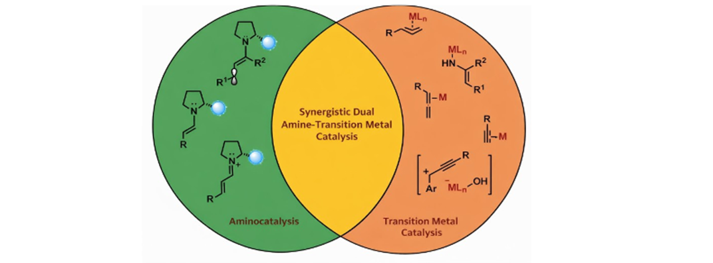
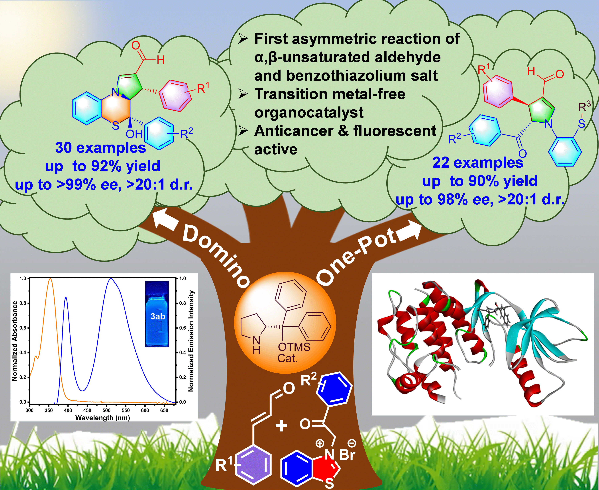
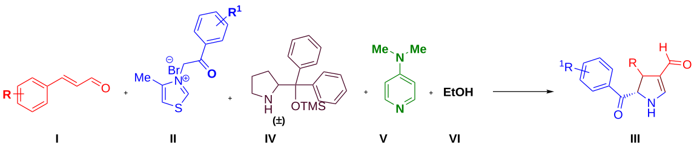
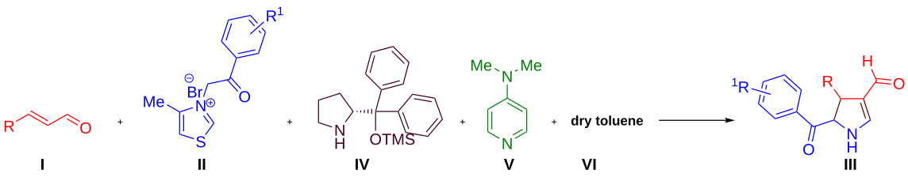
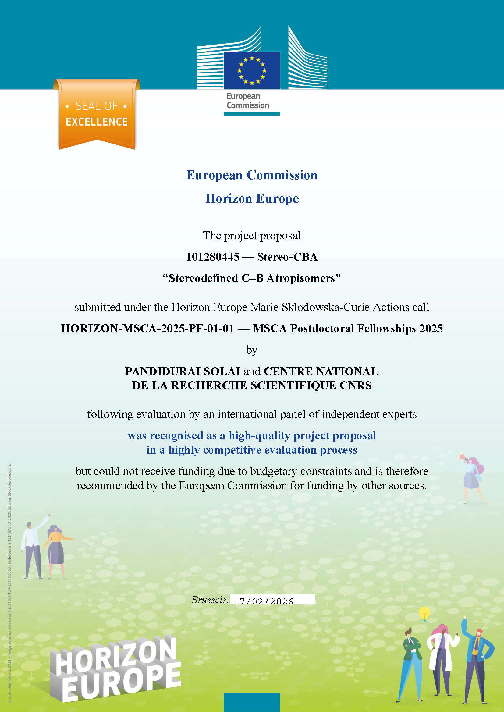
Congress on Organic Chemistry Days (JCO-2025)
École Polytechnique, Palaiseau, France (Oct 29-31, 2025)
Conferences for Young Researches XVIII J-NOST-2023
Department of Chemistry
Indian Institute of Science Education and Research (IISER)
Pune, India (Oct 10-12, 2023)
Chemistry In-House Symposium-2023 (CiHS-2023)
Department of Chemistry
Indian Institute of Technology Madras
Chennai, India (Sep 23, 2023)
2nd National Conference on Contemporary Facets in Organic Synthesis (CFOS-2022)
Indian Institute of Technology Roorkee
Uttarakhand, India (Dec 1-4, 2022)
Chemistry In-House Symposium-2022 (CiHS-2022)
Department of Chemistry
Indian Institute of Technology Madras
Chennai, India (Sep 22, 2022)
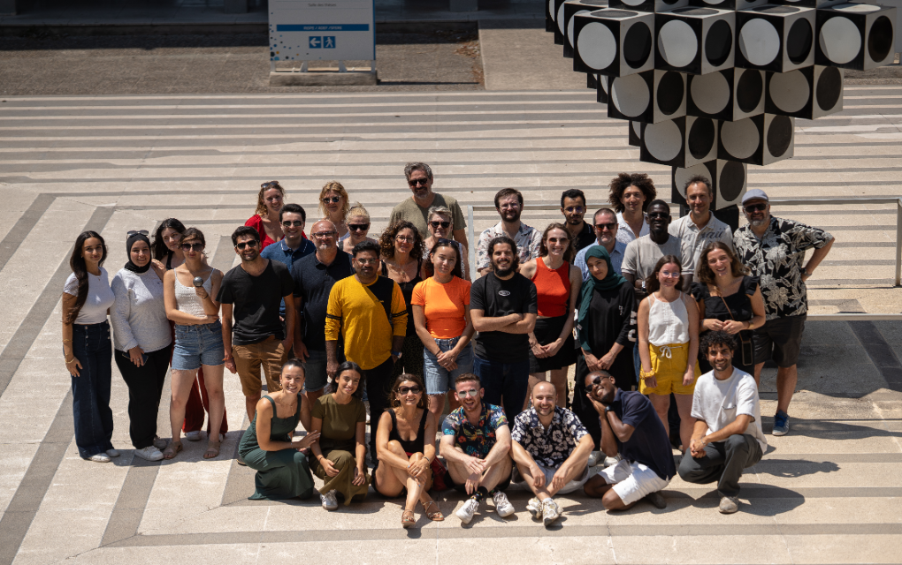
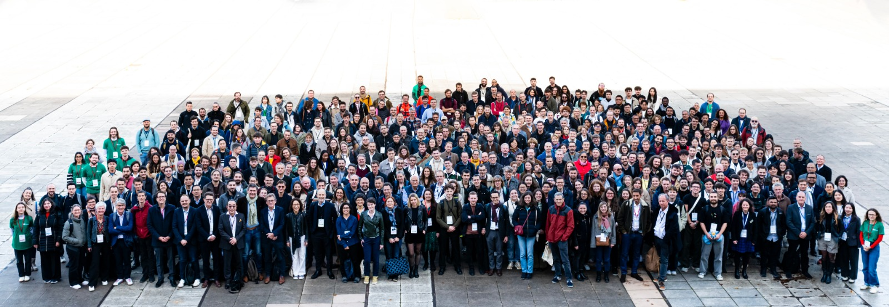

I am always open to discussing research collaborations, sharing scientific insights, and exploring new academic or industrial opportunities.
iSm2 Institute of Molecular Sciences of Marseille
Aix-Marseille University, Marseille, France